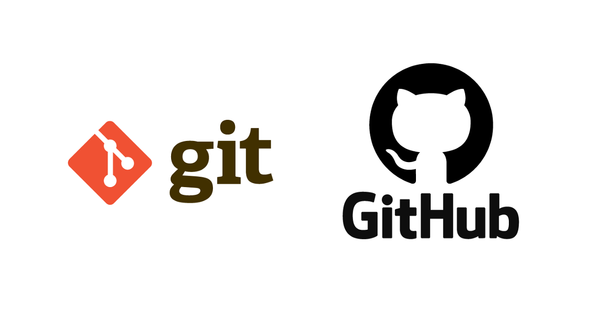
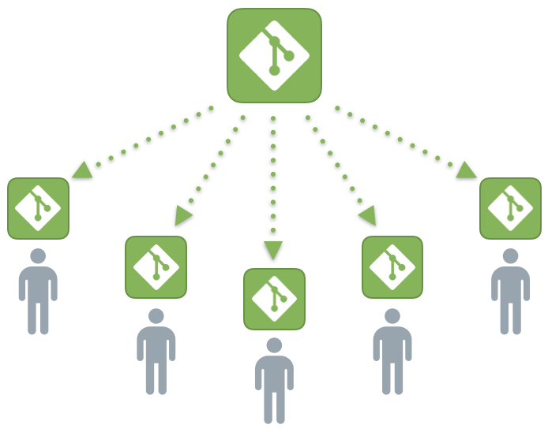
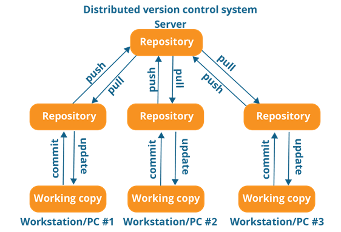
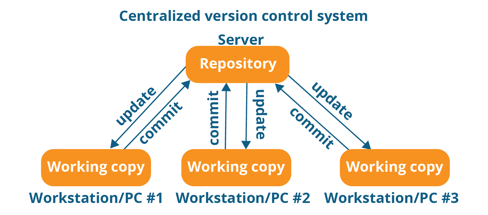
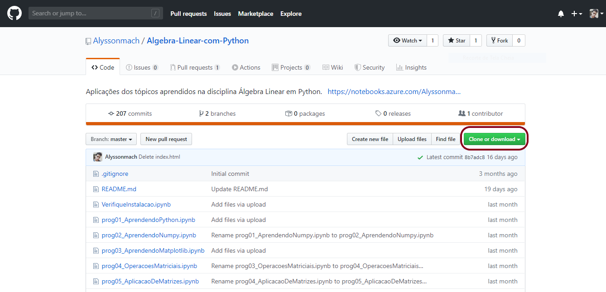
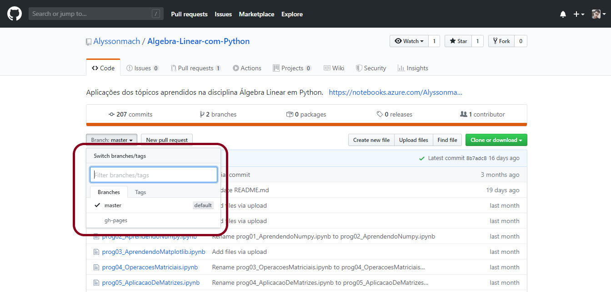
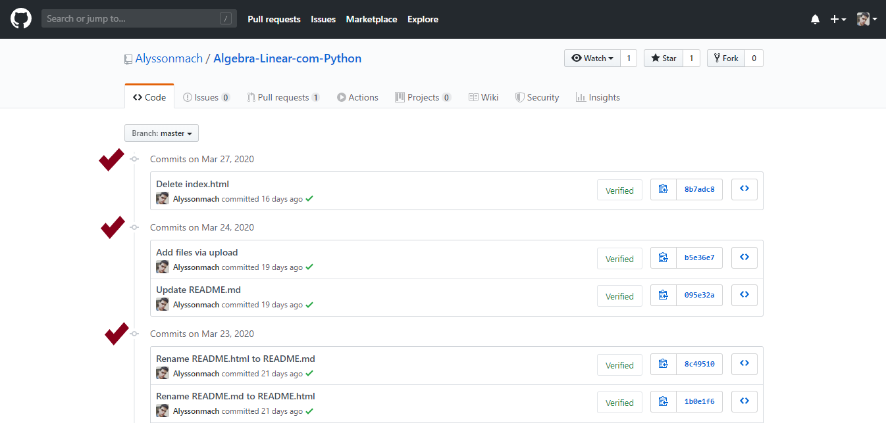
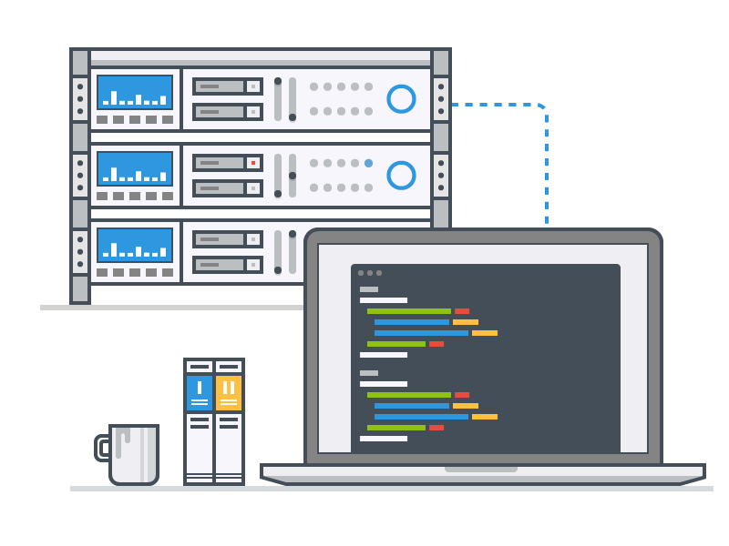

Git é um sistema distribuído de controle de versões. Cada pessoa pode manter uma cópia completa do repositório em sua máquina, com o histórico do projeto. As alterações são registradas em commits e podem ser compartilhadas com outros repositórios remotos, como o GitHub.
Um sistema de controle de versões (VCS, do inglês version control system) registra as alterações feitas nos arquivos ao longo do tempo. Ele permite comparar versões, consultar o histórico e recuperar estados anteriores.
O Git ajuda a acompanhar o histórico do projeto, organizar o trabalho em branches e compartilhar mudanças com outras pessoas. Veja alguns conceitos importantes:
- As branches permitem desenvolver funcionalidades, correções e testes em linhas de trabalho separadas, sem alterar imediatamente a branch principal.
- O Git oferece diferentes formas de desfazer alterações. Por exemplo, revert cria um novo commit que desfaz outro; reset move a referência da branch e pode alterar a área de preparação ou os arquivos, dependendo das opções usadas.
- Cada pessoa pode trabalhar em uma cópia local do repositório e compartilhar commits por meio de um repositório remoto, como o GitHub. O Git também permite comparar e integrar as alterações feitas pela equipe.
Em projetos com várias pessoas, o controle de versões ajuda a organizar o trabalho: registra quem alterou cada parte, permite comparar mudanças e facilita recuperar versões anteriores quando necessário.

Um projeto costuma passar por várias versões antes de chegar a uma versão estável. O Git registra essas mudanças em commits, permitindo consultar estados anteriores e testar novas ideias em branches sem perder o histórico.
Neste minicurso, usaremos o GitHub Desktop para acompanhar as operações do Git por uma interface gráfica. Também existem outras interfaces e a linha de comando, que oferecem acesso às mesmas operações.
O Git é um sistema distribuído de controle de versões. Cada clone contém o repositório e seu histórico, permitindo que muitas operações sejam feitas localmente. Para colaborar, as pessoas compartilham commits entre repositórios, geralmente usando um serviço remoto como o GitHub. Esse serviço facilita a colaboração, mas não é um servidor central obrigatório do Git.

Em um sistema centralizado, o histórico principal fica em um servidor central, e os clientes dependem dele para consultar ou registrar mudanças. No Git, cada clone tem o histórico completo do repositório. A escolha entre modelos depende do fluxo de trabalho; sistemas distribuídos não são, por si só, inviáveis para projetos de código aberto.

A seguir, veja alguns outros sistemas de controle de versões:
| Fluxo de Trabalho Centralizado | Fluxo de Trabalho Distribuído |
| 1. CA Software Change Manager | 1. Mercurial |
| 2. Source Code Control System | 2. Bazaar |
| 3. Panvalet | 3. Code Co-Op |
| 4. Concurrent Version System | 4. GNU Arch |
| 5. Apache Subversion | 5. Monotone |
| 6. ClearCase | 6. Fossil |
| 7. Visual SourceSafe | 7. BitKeeper |
| 8. Perforce | 8. Git |
Agora vamos conhecer alguns comandos e conceitos que são fundamentais para trabalhar com Git e GitHub.
| Comandos e conceitos básicos |
|---|
| Clone: cria uma cópia local de um repositório remoto, incluindo seu histórico. |
| Branch: é uma linha de desenvolvimento dentro do repositório. Ela permite trabalhar em mudanças separadas; a branch principal pode ter nomes diferentes, como main ou master. |
| Checkout ou switch: permite mudar para outra branch. Checkout também pode ser usado para restaurar arquivos. |
| Add: prepara as mudanças escolhidas para serem incluídas no próximo commit. |
| Commit: registra no histórico local as mudanças que foram preparadas. |
| Revert: cria um novo commit que desfaz as mudanças de outro commit sem apagar o histórico. |
| Pull: busca mudanças do repositório remoto e tenta integrá-las à branch local atual. |
| Push: envia commits locais ao repositório remoto para que outras pessoas possam acessá-los. |
As imagens a seguir ilustram alguns conceitos básicos. Neste minicurso, usaremos o GitHub Desktop para acompanhar essas operações por uma interface gráfica; elas também podem ser realizadas pela linha de comando.

Comando clone, baixando um repositório para a sua área de trabalho.

Comando branch, os "universos paralelos do repositório".

Comando commit, versionando os arquivos no repositório.
Na próxima aula, vamos conhecer o GitHub e ver como ele pode ajudar a publicar projetos e colaborar com outras pessoas.
Está gostando do conteúdo? Compartilhe com seus amigos para que eles possam aprender também! Ajude a tornar a educação gratuita mais plural e democrática.
